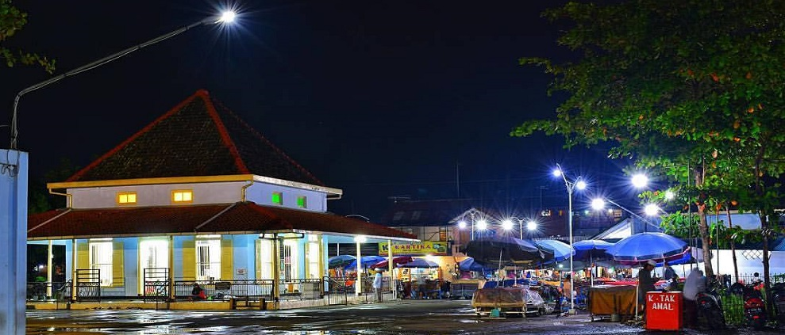

Maqam Sapuro

Kota Pekalongan selama ini dikenal sebagai kota yang religius. Hal ini diperkuat dengan banyaknya makam-makam para ulama atau wali di Kota Pekalongan, termasuk makam seorang ulama besar yaitu Habib Ahmad bin Abdullah bin Thalib Al Atas yang berada di Kelurahan sapuro. Al Habib Ahmad Bin Abdullah Bin Thalib Alathas dilahirkan di kota Hajren Hadramaut, Yaman pada tahun 1255H atau 1836M.
menghabiskan masa remajanya untuk mempelajari ilmu agama di kota asalnya. Beragam disiplin ilmu agama berhasil beliau raih dengan gemilang. Beliau melanjutkan pendidikannya ke kota Mekah dan Madinah. Sekalipun banyak mendapat tempaan ilmu dari banyak guru di kedua kota suci ini, namun guru yang paling utama dan paling besar pengaruhnya bagi pribadi Habib Ahmad adalah As-Sayyid Ahmad Zaini Dahlan. Beliau adalah seorang ulama yang sangat banyak muridnya di Mekah dan di negara-negara lain, termasuk Indonesia. Hadhratul Fadhil Mbah K.H. Kholil, Bangkalan Madura dan Hadrotusy Syekh K.H. Hasyim Asy’ari, Jombang Jawa Timur juga pernah berguru kepadanya. Kedua ulama ini adalah cikal bakal jamiyyah Nahdhatul Ulama.
Setelah selesai dan lulus menempuh pendidikan dan latihan, terutama latihan kerohanian secara mendalam, Habib Ahmad mendapat tugas dari gurunya untuk berdakwah menyebarkan syariat agama Islam di kota Mekah. Beliau sangat dicintai dan dihormati oleh segala lapisan masyarakat, karena Habib Ahmad berusaha meneladani kehidupan Rasulullah SAW. Habib Ahmad mengajar dan berdakwah di kota Mekah selama tujuh tahun. Setelah itu beliau kembali ke kampung halamannya, Hadramaut.
Tidak lama mukim di kota kelahirannya, Habib Ahmad merasa terpanggil untuk berdakwah di Asia Tenggara dan pilihan beliau jatuh ke Indonesia. Karena memang pada waktu itu sedang banyak-banyaknya imigran dari Hadramaut yang datang ke Indonesia. Di samping untuk berdagang juga untuk mensyiarkan ajaran Islam.
Setibanya Habib Ahmad di Indonesia, sekitar tahun 1295 H, beliau memilih tinggal di Pekalongan, Jawa Tengah karena beliau melihat kondisi keagamaan yang masih sangat minim di sana. Dan saat pertama menginjakkan kakinya di Pekalongan, Habib Ahmad melaksanakan tugas sebagai imam di Masjid Wakaf di kampung Arab (sekarang Jl. Surabaya). Dari Masjid Wakaf inilah Habib Ahmad memulai dakwahnya. Dari pengajian kitab-kitab fiqih, pembacaan maulid daiba’i, barzanji, pembacaan wirid, zikir dan lain sebagainya. Habib Ahmad bin Abdullah bin Thalib Alathas juga dikenal sebagai ulama hafidz (penghafal al-Qur’an).
Beliau adalah seorang ulama yang selalu tampil dengan rendah hati, senang bergaul dan gemar bersilaturrahim dengan siapa saja. Habib Ahmad paling tidak senang, bahkan marah kalau ada yang mengkultuskan dirinya. Kendati demikian, Habib Ahmad tidak dapat mentolerir terhadap hukum-hukum dari Allah dan Rasul-Nya yang diremehkan oleh orang lain. Beliau sangat teguh dan keras memegang syariat Islam, seperti masalah amar ma’ruf nahi mungkar.